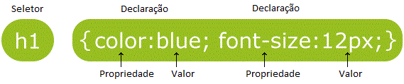

CSS descreve como os elementos HTML serão exibidos na página.
Pode controlar o layout de várias páginas ao mesmo tempo.
CSS pode ser incorporado ao HTML de 3 maneiras:
O CSS Inline é utilizado para aplicar estilo em um único elemento.
<h1 style="color:blue;">Este cabeçalho é Azul</h1>
O CSS Interno é utilizado para definir estilo em uma única página.
É definido na seção <head>, com um elemento <style>.
<!DOCTYPE html>
<html>
<head>
<title>CSS</title>
<meta charset="utf-8">
<style>
body {
background-color: powderblue;
}
h1 {
color: blue;
}
p {
color: red;
}
</style>
</head>
<body>
<h1>Isto é um cabeçalho</h1>
<p>Isto é um parágrafo</p>
</body>
</html>
O CSS Externo é utilizado para definir o estilo de várias páginas.
Com o CSS externo você pode mudar o estilo de um site inteiro apenas alterando um arquivo.
Para utilizar um arquivo externo, adicione um link ao arquivo na seção <head>.
<!DOCTYPE html>
<html>
<head>
<title>CSS</title>
<meta charset="utf-8">
<link rel="stylesheet" href="styles.css">
</head>
<body>
<h1>Isto é um cabeçalho</h1>
<p>Isto é um parágrafo</p>
</body>
</html>
O arquivo externo não deve conter nenhum trecho de código HTML, e deve ser salvo com a extensão .css
O arquivo styles.css deve ser assim:
body {
background-color: powderblue;
}
h1 {
color: blue;
}
p {
color: red;
}
Uma instrução em CSS consiste em um seletor e um bloco de declaração.
O seletor indica o elemento a ser estilizado.
O bloco de declarações contém uma ou mais declarações, separadas por ponto e vírgula.
Cada declaração inclui uma propriedade e valor, separados por dois pontos.
Uma declaração deve terminar com ponto e vírgula, e o bloco de declaração deve estar entre chaves.
No exemplo a seguir, todos os elementos de parágrafos estarão centralizados e com o texto em vermelho:
p {
text-align: center;
color: red;
}